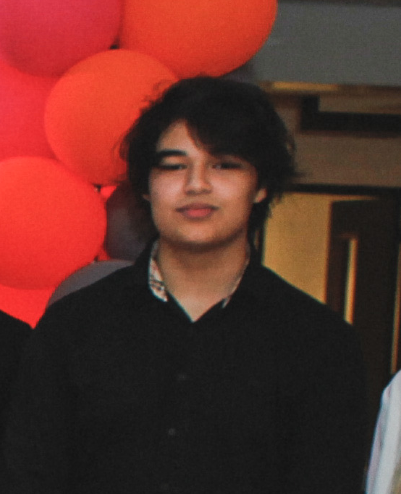

about me



Mijn naam is Yassin Chehlaoui, ik ben 18 en ik kom uit Weert, Limburg. Ik zit nu in het 2e semester
van Media op Fontys Hogeschool ICT en dit is mijn portfolio. Binnenin mijn portfolio zie je alle
voortgang die ik heb gemaakt in dit semester en alle stappen die ik heb gemaakt om te komen waar ik
nu sta.
Veel kijkplezier.
- Yassin Chehlaoui
© 2022 Yassin Chehlaoui